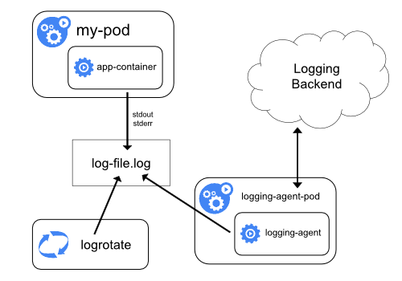

日志收集架构¶
前面我们学习了 Kubernetes 集群中监控系统的搭建，除了对集群的监控报警之外，还有一项运维工作是非常重要的，那就是日志的收集。
应用程序和系统日志可以帮助我们了解集群内部的运行情况，日志对于我们调试问题和监视集群情况也是非常有用的。而且大部分的应用都会有日志记录，对于传统的应用大部分都会写入到本地的日志文件之中。对于容器化应用程序来说则更简单，只需要将日志信息写入到 stdout 和 stderr 即可，容器默认情况下就会把这些日志输出到宿主机上的一个 JSON 文件之中，同样我们也可以通过 docker logs 或者 kubectl logs 来查看到对应的日志信息。
但是，通常来说容器引擎或运行时提供的功能不足以记录完整的日志信息，比如，如果容器崩溃了、Pod 被驱逐了或者节点挂掉了，我们仍然也希望访问应用程序的日志。所以，日志应该独立于节点、Pod 或容器的生命周期，这种设计方式被称为 cluster-level-logging，即完全独立于 Kubernetes 系统，需要自己提供单独的日志后端存储、分析和查询工具。
Kubernetes 中的基本日志¶
下面这个示例是 Kubernetes 中的一个基本日志记录的示例，直接将数据输出到标准输出流，如下：
apiVersion: v1
kind: Pod
metadata:
name: counter
spec:
containers:
- name: count
image: busybox
args: [/bin/sh, -c,
'i=0; while true; do echo "$i: $(date)"; i=$((i+1)); sleep 1; done']将上面文件保存为 counter-pod.yaml，该 Pod 每秒输出一些文本信息，创建这个 Pod：
$ kubectl apply -f counter-pod.yaml
pod "counter" created创建完成后，可以使用 kubectl logs 命令查看日志信息：
$ kubectl logs counter
0: Thu Dec 27 15:47:04 UTC 2018
1: Thu Dec 27 15:47:05 UTC 2018
2: Thu Dec 27 15:47:06 UTC 2018
3: Thu Dec 27 15:47:07 UTC 2018
......Kubernetes 日志收集¶
Kubernetes 集群本身不提供日志收集的解决方案，一般来说有主要的3种方案来做日志收集：
- 在节点上运行一个 agent 来收集日志
- 在 Pod 中包含一个 sidecar 容器来收集应用日志
- 直接在应用程序中将日志信息推送到采集后端
节点日志采集代理¶

通过在每个节点上运行一个日志收集的 agent 来采集日志数据，日志采集 agent 是一种专用工具，用于将日志数据推送到统一的后端。一般来说，这种 agent 用一个容器来运行，可以访问该节点上所有应用程序容器的日志文件所在目录。
由于这种 agent 必须在每个节点上运行，所以直接使用 DaemonSet 控制器运行该应用程序即可。在节点上运行一个日志收集的 agent 这种方式是最常见的一直方法，因为它只需要在每个节点上运行一个代理程序，并不需要对节点上运行的应用程序进行更改，对应用程序没有任何侵入性，但是这种方法也仅仅适用于收集输出到 stdout 和 stderr 的应用程序日志。
以 sidecar 容器收集日志¶
我们看上面的图可以看到有一个明显的问题就是我们采集的日志都是通过输出到容器的 stdout 和 stderr 里面的信息，这些信息会在本地的容器对应目录中保留成 JSON 日志文件，所以直接在节点上运行一个 agent 就可以采集到日志。但是如果我们的应用程序的日志是输出到容器中的某个日志文件的话呢？这种日志数据显然只通过上面的方案是采集不到的了。
用 sidecar 容器重新输出日志¶

对于上面这种情况我们可以直接在 Pod 中启动另外一个 sidecar 容器，直接将应用程序的日志通过这个容器重新输出到 stdout，这样是不是通过上面的节点日志收集方案又可以完成了。
由于这个 sidecar 容器的主要逻辑就是将应用程序中的日志进行重定向打印，所以背后的逻辑非常简单，开销很小，而且由于输出到了 stdout 或者 stderr，所以我们也可以使用 kubectl logs 来查看日志了。
下面的示例是在 Pod 中将日志记录在了容器的两个本地文件之中：
apiVersion: v1
kind: Pod
metadata:
name: counter
spec:
containers:
- name: count
image: busybox
args:
- /bin/sh
- -c
- >
i=0;
while true;
do
echo "$i: $(date)" >> /var/log/1.log;
echo "$(date) INFO $i" >> /var/log/2.log;
i=$((i+1));
sleep 1;
done
volumeMounts:
- name: varlog
mountPath: /var/log
volumes:
- name: varlog
emptyDir: {}由于 Pod 中容器的特性，我们可以利用另外一个 sidecar 容器去获取到另外容器中的日志文件，然后将日志重定向到自己的 stdout 流中，可以将上面的 YAML 文件做如下修改：（two-files-counter-pod-streaming-sidecar.yaml）
apiVersion: v1
kind: Pod
metadata:
name: counter
spec:
containers:
- name: count
image: busybox
args:
- /bin/sh
- -c
- >
i=0;
while true;
do
echo "$i: $(date)" >> /var/log/1.log;
echo "$(date) INFO $i" >> /var/log/2.log;
i=$((i+1));
sleep 1;
done
volumeMounts:
- name: varlog
mountPath: /var/log
- name: count-log-1
image: busybox
args: [/bin/sh, -c, 'tail -n+1 -f /var/log/1.log']
volumeMounts:
- name: varlog
mountPath: /var/log
- name: count-log-2
image: busybox
args: [/bin/sh, -c, 'tail -n+1 -f /var/log/2.log']
volumeMounts:
- name: varlog
mountPath: /var/log
volumes:
- name: varlog
emptyDir: {}直接创建上面的 Pod：
$ kubectl apply -f two-files-counter-pod-streaming-sidecar.yaml
pod "counter" created运行成功后，我们可以通过下面的命令来查看日志的信息：
$ kubectl logs counter count-log-1
0: Mon Jan 1 00:00:00 UTC 2001
1: Mon Jan 1 00:00:01 UTC 2001
2: Mon Jan 1 00:00:02 UTC 2001
...
$ kubectl logs counter count-log-2
Mon Jan 1 00:00:00 UTC 2001 INFO 0
Mon Jan 1 00:00:01 UTC 2001 INFO 1
Mon Jan 1 00:00:02 UTC 2001 INFO 2
...这样前面节点上的日志采集 agent 就可以自动获取这些日志信息，而不需要其他配置。
这种方法虽然可以解决上面的问题，但是也有一个明显的缺陷，就是日志不仅会在原容器文件中保留下来，还会通过 stdout 输出后占用磁盘空间，这样无形中就增加了一倍磁盘空间。
使用 sidecar 运行日志采集 agent¶

如果你觉得在节点上运行一个日志采集的代理不够灵活的话，那么你也可以创建一个单独的日志采集代理程序的 sidecar 容器，不过需要单独配置和应用程序一起运行。
不过这样虽然更加灵活，但是在 sidecar 容器中运行日志采集代理程序会导致大量资源消耗，因为你有多少个要采集的 Pod，就需要运行多少个采集代理程序，另外还无法使用 kubectl logs 命令来访问这些日志，因为它们不受 kubelet 控制。
举个例子，你可以使用的 Stackdriver，它使用 fluentd 作为记录剂。以下是两个可用于实现此方法的配置文件。第一个文件包含配置流利的 ConfigMap。
下面是 Kubernetes 官方的一个 fluentd 的配置文件示例，使用 ConfigMap 对象来保存：
apiVersion: v1
kind: ConfigMap
metadata:
name: fluentd-config
data:
fluentd.conf: |
<source>
type tail
format none
path /var/log/1.log
pos_file /var/log/1.log.pos
tag count.format1
</source>
<source>
type tail
format none
path /var/log/2.log
pos_file /var/log/2.log.pos
tag count.format2
</source>
<match **>
type google_cloud
</match>上面的配置文件是配置收集原文件 /var/log/1.log 和 /var/log/2.log 的日志数据，然后通过 google_cloud 这个插件将数据推送到 Stackdriver 后端去。
下面是我们使用上面的配置文件在应用程序中运行一个 fluentd 的容器来读取日志数据：
apiVersion: v1
kind: Pod
metadata:
name: counter
spec:
containers:
- name: count
image: busybox
args:
- /bin/sh
- -c
- >
i=0;
while true;
do
echo "$i: $(date)" >> /var/log/1.log;
echo "$(date) INFO $i" >> /var/log/2.log;
i=$((i+1));
sleep 1;
done
volumeMounts:
- name: varlog
mountPath: /var/log
- name: count-agent
image: k8s.gcr.io/fluentd-gcp:1.30
env:
- name: FLUENTD_ARGS
value: -c /etc/fluentd-config/fluentd.conf
volumeMounts:
- name: varlog
mountPath: /var/log
- name: config-volume
mountPath: /etc/fluentd-config
volumes:
- name: varlog
emptyDir: {}
- name: config-volume
configMap:
name: fluentd-config上面的 Pod 创建完成后，容器 count-agent 就会将 count 容器中的日志进行收集然后上传。当然，这只是一个简单的示例，我们也完全可以使用其他的任何日志采集工具来替换 fluentd，比如 logstash、fluent-bit 等等。
直接从应用程序收集日志¶

除了上面的几种方案之外，我们也完全可以通过直接在应用程序中去显示的将日志推送到日志后端，但是这种方式需要代码层面的实现，也超出了 Kubernetes 本身的范围。下节课我们给大家演示下具体的日志收集的操作方法。